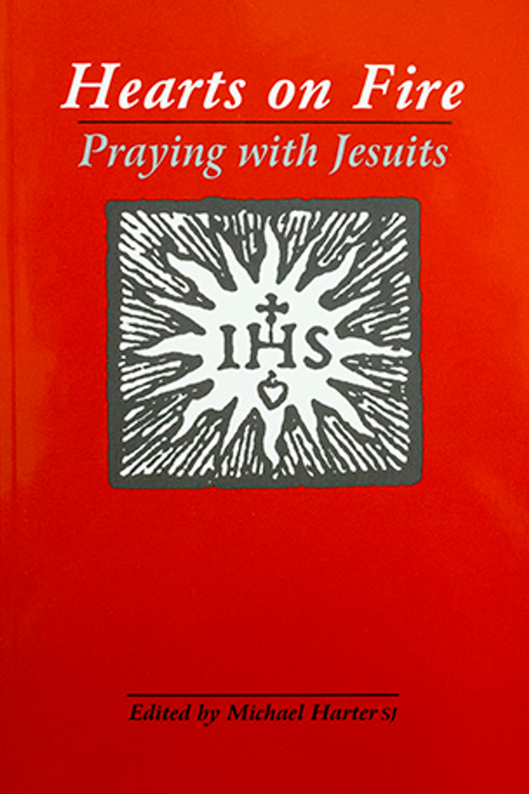

First, Let's talk about St. Ignatius of Loyola (1491 to 1556), The Spanish Priest who established the Society of Jesus in 1540. He created the Spiritual Exercises, the foundation of Ignatian spirituality, due to his soldier experiences and subsequent spiritual conversion. These practices, which involve prayer, introspection, and discernment, assist people in strengthening their relationship with God.
Next, our book. A book titled "Hearts on Fire: Praying with Jesuits" gathers 117 prayers rooted in Ignatian spirituality, the most influential spiritual tradition of the modern era. An SJ named Michael Harter assembled the book. It contains prayers composed by about forty Jesuits from the Society's founding to the present. Ignatian spirituality, which affirms that God is present in everything and everywhere at all times, is given voice by the prayers. The "four weeks" of St. Ignatius' Spiritual Exercises inspire the blessings in this book.
The book's most remarkable feature is how it blends the ageless wisdom of Jesuit prayers with the potent spirituality of Ignatian spirituality. Numerous readers have found resonance in the book's distinctive and inspirational viewpoint on prayer and spirituality. I related most to the First Principle and Foundation. This place taught me to be grateful for everything God created for us. Furthermore, we shouldn't limit our desires to what is tangible, emotional, or material. In my opinion, this suggests that rather than placing everything into it, we ought to be thankful for whatever it is. We have this gift from God, and we ought to learn to be grateful for it.

Hearts on Fire: Praying with Jesuits, the book Vlad read and shared to me.